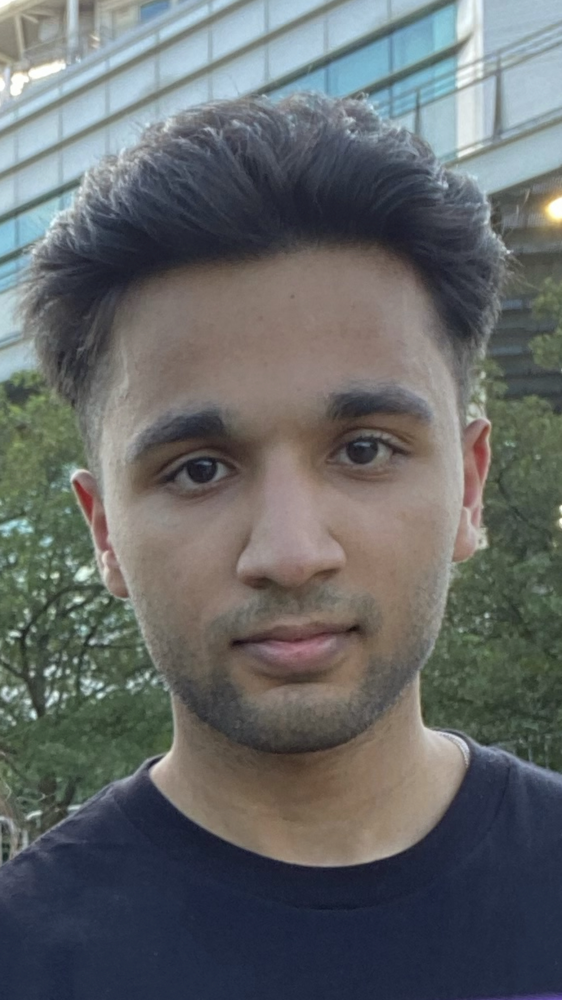

Krish Dhungana
Resume
Education
Illinois Institute of Technology
Chicago, IL
B.S. Applied Cyber Security and information technology | GPA: 3.75
Aug 2020 - Current
- Main coursework: Database management, Networking, Operating systems, Algorithms and Data Structures, Security Concepts
- Awarded ”Best Freshmen”, a major achievement for being in the top undergraduate in major
Work Experience
Front Desk • Volunteer
Chicago, IL
Chicago Public Library
July 2018 – August 2018
- Volunteered with the Budlong Woods branch of the CPL. While there I assisted in taking messages, scanning, documents, and answering queries. Gaining valuable customer service experience, by dealing with library patrons. Listened to all customer needs and helped issues regarding the sign up process.
Sales Associate
Chicago, USA
Kohls
June 2021 – August 2021
- Through the summer of 2021 I worked at the Kohls Lincolnwood Location. Both on the salesfloor and at the register. Worked on a team which encouraged collaboration and empowerment. I took the initiative to help customers and manage the area I was in charge of.
Level 1 Tech Specialist
Mount Prospect, IL
CDW
Dec 2021 - Jul 2022
- During the summer of 2022, I worked at the CDW – Vernon Hills location. During my time, I installed and uninstalled hardware from laptops. Overtime, I gained valuable skills in the understanding of computer hardware and modification.
Projects
Network Infrastructure Design (Wired & Wireless) -
Chicago, IL
Illinois Institute of Technology
Oct 2021 - Jan 2022
- Created a working wired and wireless network design. This project was an example of what a real design proposal would be. Through this project, I am now familiar with network components and the creation of a LAN network.
Programming Applications and Website Building
Chicago, IL
Personal + Von Steuben High School
Sep 2020 - Current
- Multiple websites and simple applications made by HTML, Python, and Java. Intermediate understanding of HTML and python. Basic understanding of Java. Comfortable with paired programming and agile software development. Created a website for a client and programs for simple computations.
Honors and Awards
- Illinois Institute of Technology - 2021-2022 Outstanding First Year Student In Applied Cybersecurity & Information Technology
- 2021-2022 Deans List Student
- 2022-2023 Deans List Student